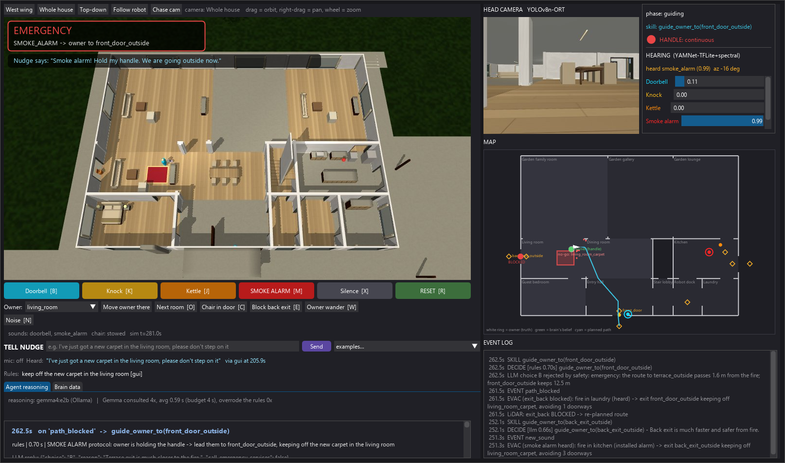

Nudgea local-AI assistance dog for deaf, blind and deafblind people
Agentverse 2026 · Robotics track · Unitree Go2 in MuJoCo · local Gemma 4 at its core · 100 % local AI
Safety always on.
Local Gemma for the unknown.
2 million+
people in the UK living with sight loss
18 million
adults deaf, with hearing loss or tinnitus: 1 in 3 (RNID)
450,000+
deafblind people in the UK, rising to 610,000+ by 2035 (Sense)
16–18 months
average wait for a guide dog; some wait 2–4 years

Smoke alarm: the emergency pre-empts everything; LiDAR finds the back exit blocked, Nudge re-plans, and safety rejects a Gemma exit choice that passes near the fire. Perception (head camera, hearing) is shown next to the actions.
The problem
Deafblindness is the hardest case: over 450,000 people in the UK, rising to over 610,000 by 2035. An assistance dog changes their life, but there are far too few: Guide Dogs UK has only around 3,500–4,800 working partnerships, people wait 16–18 months on average and some 2–4 years, and one guide dog is reported to cost £55,000 to over £100,000 from birth to retirement. A hearing dog costs about £40,000 over its life, takes about 1.5 years to train and has a waiting list of around two years. A deaf person who can't hear the smoke alarm can't wait two years.
Our user and what Nudge does
Nudge is a Unitree Go2 quadruped in a furnished house; it waits on its charging dock by the front door. It listens all the time with stereo ears, sorts household sounds by urgency (emergency: smoke alarm; needs action: kettle, oven timer; someone wants you: doorbell, knock) and works out where each sound comes from (direction and loudness at the two ears, combined over several robot positions). It finds the owner with its camera (and their voice when they speak), nudges them, waking them if they are asleep in bed or on the sofa, and alerts them the way their profile needs: haptic guide handle (deafblind), light bar and screen (deaf), speech only when close (blind). Like a real guide dog it walks on the owner's left, so its rigid guide handle swings up on the owner's side and telescopes to hand height, where a blind owner can find it and follow. The handle gives one pattern per urgency (1 pulse: doorbell; 2 pulses: needs action, e.g. kettle; continuous: emergency), shown as a glowing grip in the simulation, and the light bar shows which sound by colour + blink count; its red and blue ends flash only for danger. The owner acknowledges by tapping the handle; then Nudge guides them to the source, or out of the house in a fire. The owner can talk to it: "Nudge, take me to the kitchen" (wake word "Nudge", local Whisper), and answer its questions with a plain "yes" or "no", no wake word needed ("Shall I call 999?").
The main idea
Safety is always on; everything else is learned from the owner. The safety features (smoke-alarm pre-emption, the LLM watchdog, the speed cap near the owner, calling for help) are plain code that can't be switched off, overridden by the AI or downgraded by anything the owner says. On top of that, Nudge remembers what the owner tells it and keeps doing it in the future: rules ("don't step on the new carpet") and tasks ("every night at 10, take me to bed"), turned into structured rules and saved task programs by local Gemma, then enforced and repeated by plain code. Gemma is the brain in between: it understands the owner and decides what to do; plain code makes sure it is always safe.
System architecture
Two processes over ZeroMQ, so physics never waits for AI. Simulator: 500 Hz physics, head RGB-D camera (10 Hz), 36-ray 2D LiDAR, stereo 16 kHz ears with wall and distance effects. Brain: a reflex layer in plain code (smoke-alarm pre-emption, obstacle stops, speed cap near the owner, watchdogs; milliseconds) and a thinking layer, local Gemma (below), woken only on events.
How we use Gemma 4 (the core)
Local Gemma 4 E2B runs in Ollama on the laptop GPU, with no cloud call. We use it in three ways:
- Deciding, from a menu. Gemma only wakes on an event (new sound, owner seen or not found, path blocked, no response, timeout). Plain code then builds a lettered menu of the legal options from live perception, each with its facts: the chance the owner is in each room and how far it is, each exit's walk length and distance from the fire, how many nudges went unanswered. Gemma answers through a JSON schema that only allows the menu's letters plus a one-line reason, so it cannot invent an action; the reason is shown on screen. Safety decides what is on the menu, Gemma decides which option: which room to search first, re-nudge or lead the owner out, which exit, whether to call 999.
- Understanding the owner. A sentence like "I've got a new carpet, please don't step on it" or "every night at 10, take me to bed" becomes a structured rule or task program (schema with only known rooms, objects and skills); plain code stores, enforces and repeats it. Things it can't do ("call my daughter") are refused, never promised. Gemma also writes the short message Nudge says.
- Checked every time. A 4 s watchdog hands slow or offline answers to deterministic rules; a Gemma exit that passes closer to the fire than the planner's is rejected; every decision is logged with what the rules would have done, and an eval gate (90 % on real logged decisions) re-checks Gemma after any prompt change.
Measured on the recording laptop: 0.19 s median per decision (0.26 s p95), 93 % right on real logged decisions, 100 % inside the watchdog, so no fine-tuning was needed.
Where each model runs: all local models, on one laptop with an RTX 5060, no cloud calls
| Model | Job | Runs on | Latency |
|---|
| Gemma 4 E2B (Ollama) | all decisions + explanations; owner's words → rules / tasks | laptop GPU | 0.19 s median (0.26 s p95) per decision; ~0.6 s per sentence |
| YAMNet + spectral rules | household sounds | CPU | alert 0.5 s after a sound starts (median) |
| YOLOv8n (ONNX) | owner + objects | CPU | real time at the camera's 10 Hz |
| Whisper base.en | owner's voice | CPU | under a second per sentence |
| Piper TTS | Nudge speaks | CPU | local, offline |
All five models are local: they run on the laptop, offline, downloaded once and SHA-256 pinned; nothing in the runtime loop calls a cloud API.
Adapting when the scene changes
- The owner moves mid-run; a chair blocks a doorway, or the back exit in a fire, the LiDAR sees it and the robot re-plans. It notices when it's stuck, backs off, remembers the obstacle and re-routes.
- Visitors behave like real ones: they ring or knock in bursts, pause and may give up, and Nudge treats it as one visit. A doorbell from the TV is recognised as the TV (0 of 243 real door sounds mistaken for the TV); a kettle during a doorbell mission is deferred, then handled; it never re-scans a room its camera already cleared.
- Built and measured, off in the recorded take: it maps a house by itself from LiDAR + depth camera (a "Rescan house" button re-maps it live, no restart; 99.8 % of the floor, walls 97 % precise, exits found within 0.01–0.21 m); it estimates its own position from LiDAR (~8 cm error vs 9.4 m drift from odometry alone; passes the demo story with it on); a second home (an apartment) runs with the same code.
Measured
- Sounds: 96 % of demo sounds detected in 1,000 random trials over 5 noise profiles; the smoke alarm was never missed; 0 % false alerts from background noise.
- Owner detection: seen in 97–98 % of head-camera views.
- Adaptability benchmark: 9 of 12 randomised, never-seen situations passed (75 %). Teaching by sentence: 19/19 test sentences turned into the right rule or task, or refused.
- Scenario tests (ground-truth judge): default suite 14/14 PASS; robot-map mode 22/24 + 9/9 soak; apartment doorbell, smoke, kettle PASS.
Critical failure mode and how it's handled
The critical failure is a missed or late smoke alarm, or not getting the owner out. The alarm is checked first, in plain code, and never gated by other rules: it pre-empts any task in 0.6 s with a continuous haptic alert. The exit choice is fire-aware (walk length vs distance from the fire, never through the fire room, exits the LiDAR sees blocked are dropped), and a Gemma exit choice that passes closer to the fire than the planner's is rejected. Nudge asks "Shall I call 999?" while still leading the owner out and calls on "yes" or no answer; if the owner isn't found within 40 s it calls anyway.
Safety
Always on, in plain code: the LLM only chooses from legal options; a 4 s watchdog hands slow or offline answers to rules; speed capped at 0.4 m/s within 1 m of the owner; nothing the owner says can downgrade a smoke alarm; no response to repeated nudges → emergency contact, and Nudge stays with them.
Limits (what it cannot do yet)
- Sound: the demo uses synthesized clips; real recordings are weaker (smoke 96 %, doorbell 64 %, worst under loud noise).
- Knowing the house: room names, doors and alarm locations come from a hand-written floor plan (the robot's own map gives walls and exits, not names); it only recognises furniture a standard detector knows.
- Body: walking is kinematic and the handle, lights and screen are simulated; self-localisation needs a known start.
- Owner unreachable: if the only way to the owner is blocked, it re-routes but doesn't yet escalate.
- Next steps to a real Go2: localisation on real sensors, real-room hearing, building the handle hardware.
Sources: RNID (prevalence of deafness and hearing loss); Guide Dogs UK / Royal Canin (sight loss, partnerships); Sense (deafblindness statistics, 2023); Hearing Dogs for Deaf People; BBC, Guardian, ITV and Kent Online reporting on guide-dog waiting times and costs.
Team Nudge: Eden, Finn, Matteo, Ricktho, Sean · Scene: nerv-world house (MIT), Go2 from MuJoCo Menagerie (BSD-3) · Numbers measured in simulation on 2026-11-08.